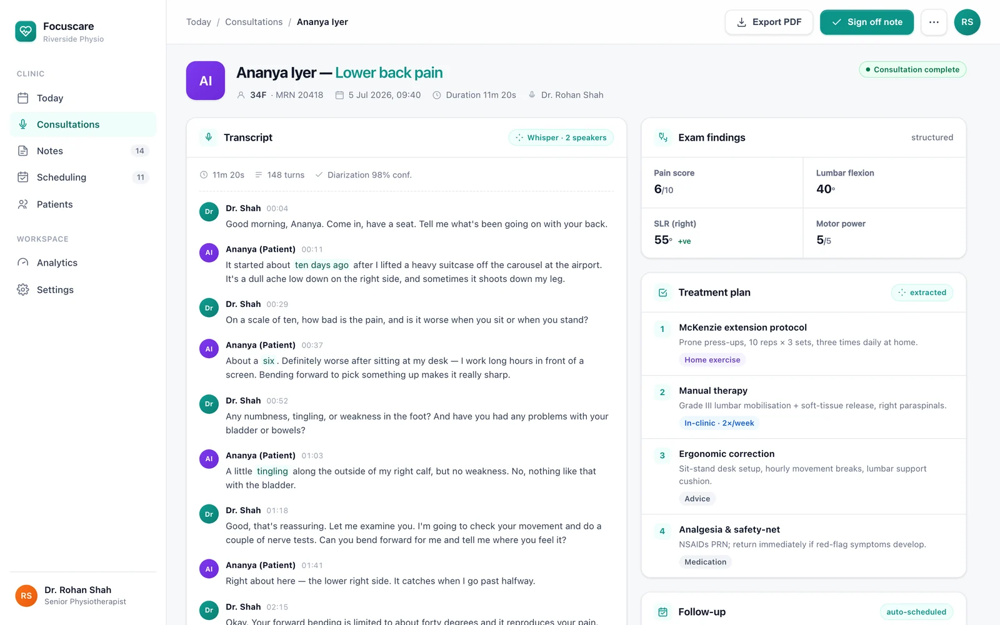

Press start
One click opens the session. Client-side audio streams over WebSocket to the transcription backend.
One click starts the session — Focuscare listens, writes the SOAP note, and schedules the next visit. The clinician stays with the patient; the paperwork takes care of itself.
Client-side audio, structured notes — nothing typed by hand.
Open the room and press once. No setup, no forms — recording and transcription begin instantly.
GPT-4 with physiotherapy-specific prompts turns the conversation into a structured, editable SOAP note.
Treatment plans trigger appointment workflows — SMS and email reminders, with missed-visit detection.
Focuscare runs the flow from the moment the patient sits down to the reminder that brings them back — so the clinician can stay present the whole way through.
One click opens the session. Client-side audio streams over WebSocket to the transcription backend.
OpenAI Whisper captures the conversation in real time, with speaker identification for clinician and patient.
GPT-4 shapes the transcript into a SOAP-format clinical note — ready to review and sign, not to write.
The treatment plan sets the next visit automatically and queues the reminders that get the patient back.
Every treatment plan is a schedule waiting to happen. Focuscare reads the plan, sets the return visit, and keeps the patient on track — without anyone chasing a calendar.
Reminders generated automatically
Two views from Focuscare in a live clinic — the day at a glance, and a single consultation from transcript to booked follow-up.

Live transcription turning into a structured SOAP note — the clinician talks with the patient while Focuscare captures every line and drafts the note alongside.
A consultation end to end: the full transcript, the finished SOAP note, and the follow-up already scheduled from the treatment plan — nothing left to type or book.

Focuscare handles the whole consultation loop — capture, notes, and the follow-through — grounded in tooling built for clinical accuracy.
Client-side audio streams over WebSocket to a Python/Whisper backend and comes back as live text.
The transcript separates clinician from patient, so the record reads the way the conversation happened.
GPT-4 runs physiotherapy-specific prompts to structure notes in the S-O-A-P format clinicians already use.
Treatment plans trigger appointment workflows automatically — the next visit is set before the patient leaves.
SMS and email reminders go out on schedule, keeping patients engaged between visits.
No-shows are caught and re-engaged automatically, so gaps in care don't go unnoticed.
Focuscare was shaped around how a physiotherapy clinic actually runs — the goal isn't more software to manage, it's less between the clinician and the person in front of them.
No forms before a session — press once and Focuscare is already listening.
Structured SOAP notes arrive drafted — review and sign instead of typing from memory.
Scheduling and reminders run themselves from the treatment plan — no chasing.
A focused stack — real-time audio, proven speech and language models, and a fast API layer to tie it together.
Walk through a live Focuscare session with the team that built it — from the first click to the follow-up that books itself.
Prefer email? buildspacelabs@vruoom.com